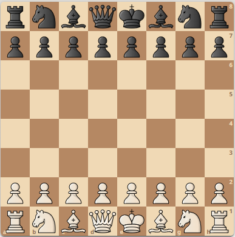

Home
•
Klubben
•
Medlemmar
•
Christer Nilsson
Terrängschack Mini
| Axel Ornstein • 2149 • 20:10 |
|  |
| Lars Karlsson • 2403 • 20:10 |
| Bäring | Avstånd | Ruta | Ålder |
|---|---|---|---|
| 60° | 93 meter | g3 | 1 minut |
Terrängschack Mini spelas av två deltagare
Man måste besöka både startruta och slutruta
Man vinner genom att
- förflytta sig snabbare än motståndaren
- välja bättre väg genom terrängen
- spela bra drag snabbare än motståndaren
En schackruta kan t ex vara tio meter
- Brädet blir då åttio meter
Deltagarna delar på en mobil och har var sin kompass
Överlämnande av mobil sker i brädets centrum.
Ett drag utförs så här:
- Man får mobilen i brädets centrum
- Man gör sitt drag på brädet
- Man förflyttar sig till startrutan
- Man förflyttar sig till slutrutan
- Man förflyttar sig till centrum
- Man överlämnar mobilen
Motståndarens klocka aktiveras då man når centrum.
Medan motståndaren utför sitt drag har man inte tillgång till mobilen.
Här erbjuds deltagaren en möjlighet att visualisera brädet i sitt huvud.